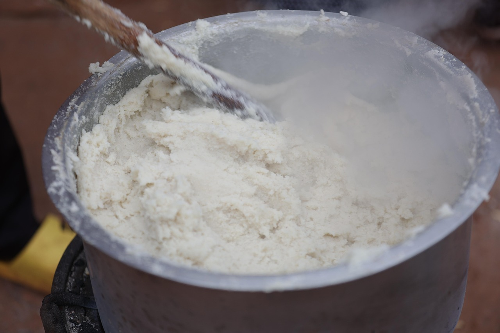

Ugali
Home

Description
Ugali can be described as stiff porridge made from maize flour. It's a staple food in several African countries.
Ingredients:
Steps:
- Put the water in a pan and add a small amount of maize flour to make a porridge.
- Stir the porridge until it thickens and then let it boil for 2 minutes.
- Slowly add flour into the porridge while stirring to avoid lumps.
- Continue adding flour slowly until the porridge is just thick enough (not too soft like a paste nor too hard to mix).
- After the ugali is properly mixed with no lumps, serve! Side dishes can be vegetables, meat etc.